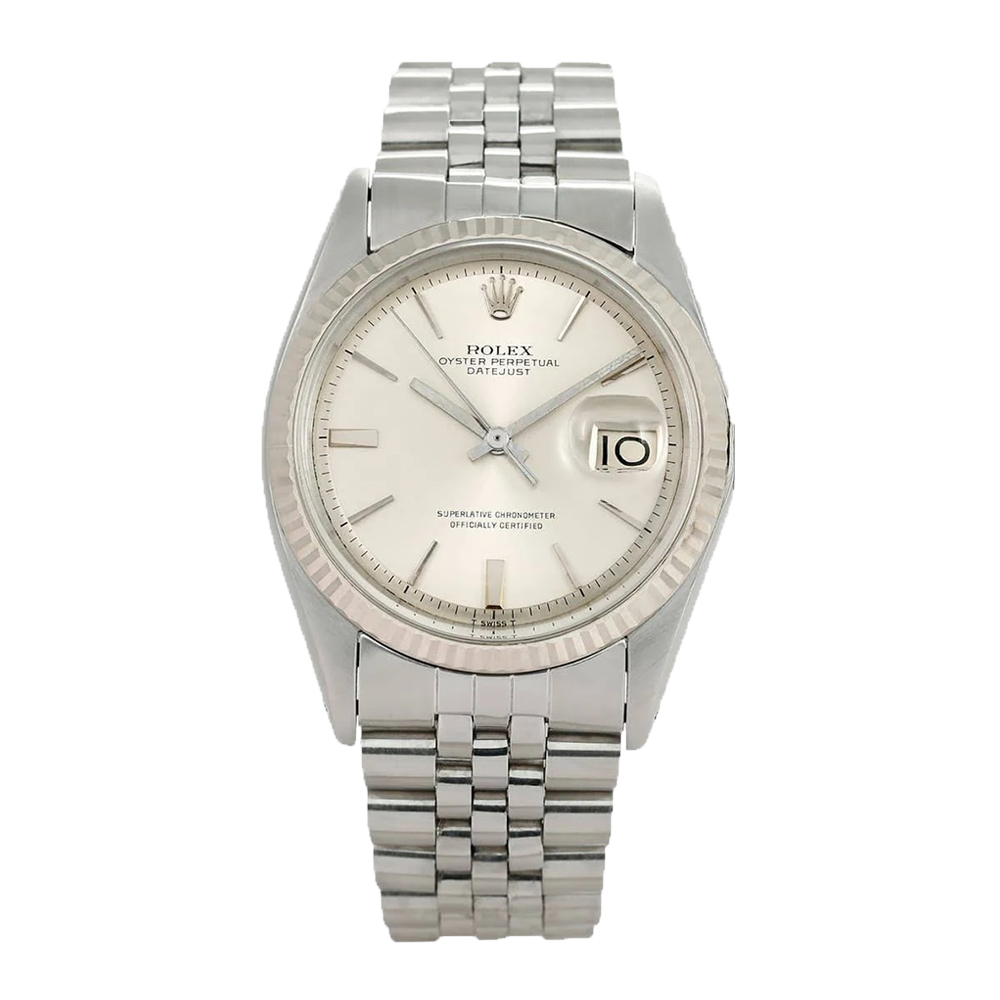
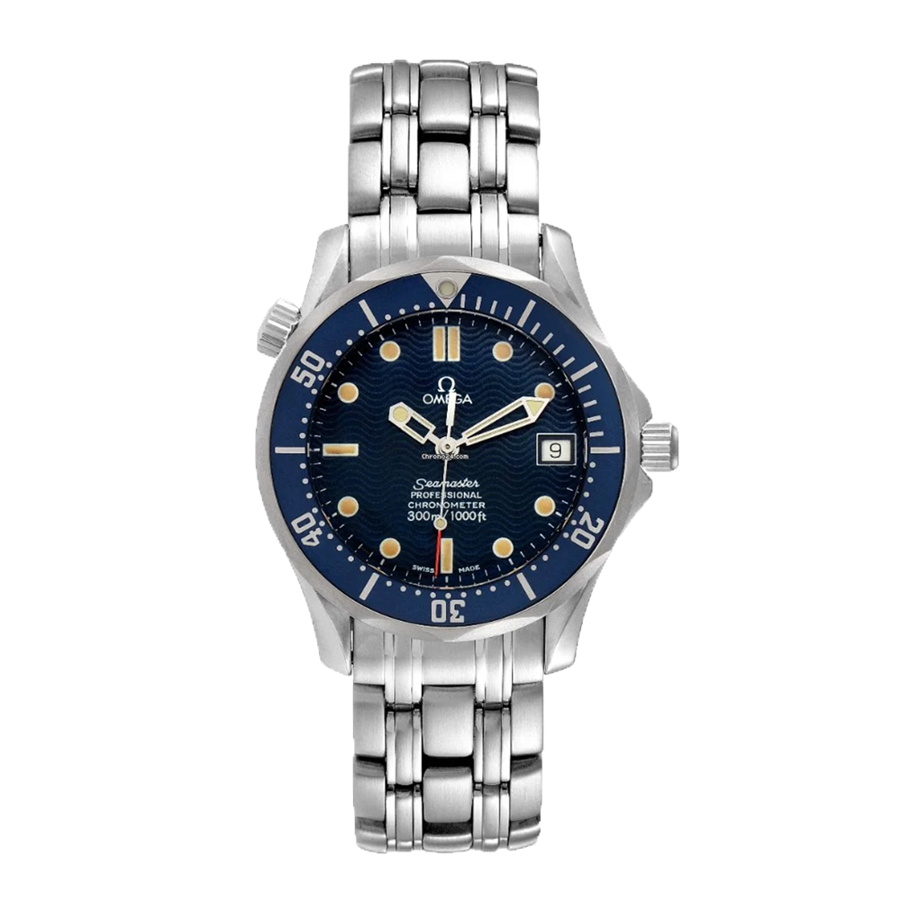

Uhrmacher Rosenheim
Die gute Adresse in Rosenheim
Sie suchen einen erfahrenen Servicepartner für Ihre Omega, Longines, Vintage-Rolex, Zenith oder Ebel?
Hier sind Sie richtig
–
willkommen bei den Uhrmachermeistern in Rosenheim!
Ob An- und Verkauf, Service oder Reparatur:
Seit 1989 leben wir als Uhrmachermeister unsere Passion für hochwertige Armbanduhren. In den Ladengeschäften sowie in unserem Online-Shop finden Sie regelmäßig ausgewählte Gebraucht-Modelle namhafter Marken. Alle Uhren sind sorgfältig auf Echtheit und technisch erstklassigen Zustand geprüft beziehungsweise gewartet. Als Käufer erhalten Sie 1 Jahr Gewährleistung. Sprechen Sie mich auch gerne an, wenn Sie an einem Verkauf Ihrer hochwertigen Marken-Armbanduhr interessiert sind.
Speedmaster Moonwatch Professional:
Entdecken Sie den Speedmaster Moonwatch Professional Co-Axial Master Chronometer.
Die Speedmaster Moonwatch gehört zu den legendärsten Zeitmessern der Welt. Der beeindruckende Chronograph, der bei allen sechs Mondlandungen dabei war, verkörpert perfekt den risikofreudigen Pioniergeist der Marke. Das Armband dieser 42-mm-Moonwatch aus Edelstahl weist ein Design mit fünf gebogenen und gebürsteten Gliedern pro Reihe auf.

Rolex Datejust Vintage Uhr von World of Time in Silber.
Wir präsentieren hochwertige, gebrauchte Uhren, die aufwendig und fachkundig aufgearbeitet werden. Dank einer Wasserdichtheit bis 100 Meter Wassertiefe wurde die Submariner zu einer der beliebtesten Uhren bei Tauchern.
Das dezente, sportliche Design schafft einen täglichen Begleiter.
Rolex Datejust:
Rolex Datejust Vintage Uhr von World of Time in Silber.
Wir präsentieren hochwertige, gebrauchte Uhren, die aufwendig und fachkundig aufgearbeitet werden. Dank einer Wasserdichtheit bis 100 Meter Wassertiefe wurde die Submariner zu einer der beliebtesten Uhren bei Tauchern.
Das dezente, sportliche Design schafft einen täglichen Begleiter.
TISSOT Uhr silber Herren:
Hochwertig verarbeitet.
Lederarmband.
Silberfarbenes Edelstahlgehäuse.
Verschluss: Verstellbarer Faltverschluss, drei Zeiger, Chronograph.
Ziffernblattfarbe: blau.
Gehäusehöhe: 12 mm.
Gehäusedurchmesser: 42 mm.
Bandbreite: 19 mm.
Wasserbeständikeit: 10 bar.
TISSOT Logodetails. 100% Edelstahl.

Typ: Unisex Uhr,
Aufzug: Quartz,
Durchmesser: 36.2 mm,
Gehäuse: Steel,
Band: Steel,
Zifferblatt: Baton,
Zifferblattfarbe: Blue,
Alter: 2002,
Original Box: vorhanden,
Original Papiere: vorhanden
Omega Seamaster:
Typ: Unisex Uhr,
Aufzug: Quartz,
Durchmesser: 36.2 mm,
Gehäuse: Steel,
Band: Steel,
Zifferblatt: Baton,
Zifferblattfarbe: Blue,
Alter: 2002,
Original Box: vorhanden,
Original Papiere: vorhanden